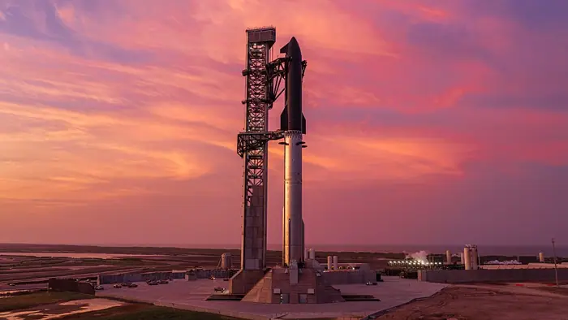

SpaceX’s supersized Starship launches into orbit for the first time but flight ends early

What happened
On a clear morning at the SpaceX launch site in Boca Chica, Texas, the Starship booster lifted off powered by a cluster of Raptor engines—SpaceX’s high‑performance methane‑fuelled engines. The vehicle surpassed the Kármán line, the internationally recognized boundary of space at 100 km altitude, and achieved a stable orbit. However, a sensor reading during ascent exceeded safe thresholds, prompting the onboard flight‑control system to trigger an automated abort sequence. The vehicle re‑entered the atmosphere and splashed down in the Pacific Ocean after only a few minutes in orbit. Reuters reported that the launch was “aborted shortly after the first stage separation” and that the vehicle was recovered for analysis [2].
The cause of the abort remains under investigation. SpaceX officials said the anomaly was linked to a single sensor that reported an unexpected value, leading the control system to shut down the engines to protect the vehicle. While the company has not released a detailed technical report, it emphasized that the incident will inform the next iteration of the vehicle. The successful orbital insertion, though brief, demonstrated that Starship can reach the velocity and altitude required for orbit—a key step toward the company’s long‑term goal of reusable heavy‑lift launch capability.
Background and context
Starship’s development has progressed through a series of suborbital test flights that focused on high‑temperature reentry, heat‑shield performance, and rapid refueling. The first orbital flight attempt, which began in 2023, was intended to validate the vehicle’s ability to reach and maintain orbit while carrying a payload. The successful orbital insertion, even if brief, confirms that the propulsion system and guidance architecture can meet the demanding requirements of spaceflight. Spaceflight Now highlighted that this milestone is “a critical proof of concept for the Starship’s design” and that it “paves the way for future crewed missions” [3].
Reusability is a cornerstone of SpaceX’s strategy to reduce launch costs. By designing Starship to return to Earth and be refurbished for subsequent flights, the company aims to bring the cost of a launch down to a fraction of the price of traditional expendable rockets. NASA’s partnership with SpaceX, which includes contracts for lunar lander development under the Artemis program, underscores the agency’s interest in leveraging commercial reusability for deep‑space exploration. NASA officials have indicated that the agency will continue to evaluate Starship’s performance as part of its broader strategy to enable crewed missions to the Moon and Mars.
Regulatory oversight is a critical component of the launch process. The Federal Aviation Administration (FAA) requires launch licenses that assess environmental impact, flight safety, and compliance with national security regulations. According to AP News, SpaceX’s license for the Starship flight included a thorough review by the FAA’s Office of Commercial Space Transportation. The agency’s safety review board evaluated the vehicle’s design, flight control systems, and emergency procedures before granting approval. The early termination of the flight has prompted the FAA to examine whether additional safeguards are necessary for future orbital attempts.
The competitive landscape of commercial launch is intensifying. Blue Origin’s New Glenn and United Launch Alliance’s Vulcan Centaur are both developing heavy‑lift vehicles that could rival Starship’s payload capacity. Space, a leading space news outlet, noted that “the race to reusable heavy‑lift launch is heating up” and that each company is striving to achieve a lower cost per kilogram to orbit. The rapid pace of development raises questions about whether the industry can maintain safety standards while pursuing aggressive timelines.
The bigger picture (diverse perspectives)
Innovation versus safety is a recurring theme in the Starship story. SpaceX’s aggressive schedule, which has seen multiple test flights in quick succession, has been praised for accelerating progress but criticized for potentially compromising thorough testing. NPR’s coverage emphasized that “the company’s rapid iteration model is a double‑edged sword,” noting that while it can identify problems quickly, it also risks overlooking subtle design flaws that could manifest in later flights.
Public expectation and investor optimism have amplified the pressure on engineers. The media’s portrayal of Starship as a “catalyst for humanity’s future in space” has led to heightened scrutiny when setbacks occur. The early abort of the orbital flight was met with both disappointment and caution, as analysts argued that the public must temper enthusiasm with an understanding of the inherent risks of spaceflight.
Regulatory oversight versus commercial freedom is another tension. The FAA’s licensing process is designed to protect public safety and national security, yet some industry stakeholders argue that it can slow innovation. The recent abort has prompted the FAA to review its procedures, with some officials suggesting that additional real‑time monitoring could enhance safety without stifling progress.
Competitive race versus collaborative opportunities remains a key question. While companies compete for market share, there is growing recognition that shared standards and data exchange could benefit the entire industry. Space’s editorial team highlighted that “collaboration on safety protocols could reduce the likelihood of costly failures.”
What to watch (future implications)
The next Starship flight is scheduled for the second quarter of 2025, according to SpaceX’s publicly available timeline. The company has indicated that it will incorporate lessons learned from the recent abort, including enhanced sensor redundancy and revised abort criteria. If successful, the flight could validate the vehicle’s ability to carry a crewed module to lunar orbit, a critical milestone for NASA’s Artemis program.
Policy shifts are also on the horizon. The FAA has signaled that it will consider updating its commercial launch licensing framework to accommodate the unique demands of reusable heavy‑lift vehicles. This could involve more dynamic risk assessments and real‑time telemetry requirements, potentially setting a new industry standard for safety oversight.
International competition is intensifying as well. China’s Long March 9 and Russia’s Soyuz‑5 are both developing heavy‑lift launch vehicles that could challenge the U.S. commercial space sector. The Starship’s early orbital success, even if brief, positions SpaceX as a key player in the global race for reusable launch technology.
Reusability’s economic impact remains a central focus. SpaceX estimates that a fully reusable Starship could reduce launch costs to as low as $2–3 million per launch, compared to $10–15 million for current expendable rockets. If achieved, this cost reduction could unlock new markets, including satellite constellations, deep‑space probes, and eventually crewed missions to Mars.
In sum, StarSpace’s first orbital insertion, followed by an early termination, encapsulates the dual nature of modern spaceflight: bold innovation tempered by the sobering reality of technical risk. The next few years will determine whether the company can translate its rapid‑iteration approach into a reliable, reusable launch system that meets both commercial and governmental needs.
Sources & further reading
- Unknown Honey bees inject venom with a two-stroke stinger
- AP News SpaceX’s supersized Starship launches into orbit for the first time but flight ends early
- NPR SpaceX’s Starship launches on first orbital mission from Texas
- Reuters SpaceX's Starship makes orbital debut deploying Starlinks before early ending
- Tempo.co English What to Know About SpaceX's Latest Falcon 9 Launch
- DW.com SpaceX launches supersized Starship into orbit
- The Killeen Daily Herald SpaceX's supersized Starship launches into orbit for the first time but flight ends early
- PBS WATCH: Four astronauts return to Earth after 8 months aboard International Space Station
- couriernews.com SpaceX's supersized Starship launches into orbit for the first time but flight ends early
- Science X SpaceX's supersized Starship launches toward orbit for the first time
- WDAM-TV SpaceX’s supersized Starship launches toward orbit for the first time - WDAM-TV
- Washington Times SpaceX's supersized Starship launches toward orbit for the first time
- Spaceflight Now SpaceX Falcon 9 rocket launches 27 Starlink satellites from California
- The Ticker Starship successfully reaches orbit for the first time, 10-hour mission cut short
- Space Relive Starship's 1st-ever orbital flight with these epic SpaceX videos
- SpaceX Starship Flight 14
- The Motley Fool Why the Starship Launch Is a Big Deal for SpaceX's Stock
- Unknown Did an AI or a human write that paper? New detector decides by examining its ideas
- Unknown U.S. crop genome sequencing gets $180 million boost
- Unknown Department of Energy expands ‘Genesis Mission’ to boost AI, awarding larger grants
- Unknown Major employer of archaeologists shuts down, leaving workers in the lurch
- Unknown Problems in 22 scientific fields had solutions hiding in plain sight. An AI has found them
- Unknown Audacious space heist aims to bring home bits of mysterious martian moon
- Unknown Two teams map development of mammal embryos, cell by cell
- Unknown Will the world end next month? Science said so, in 1960